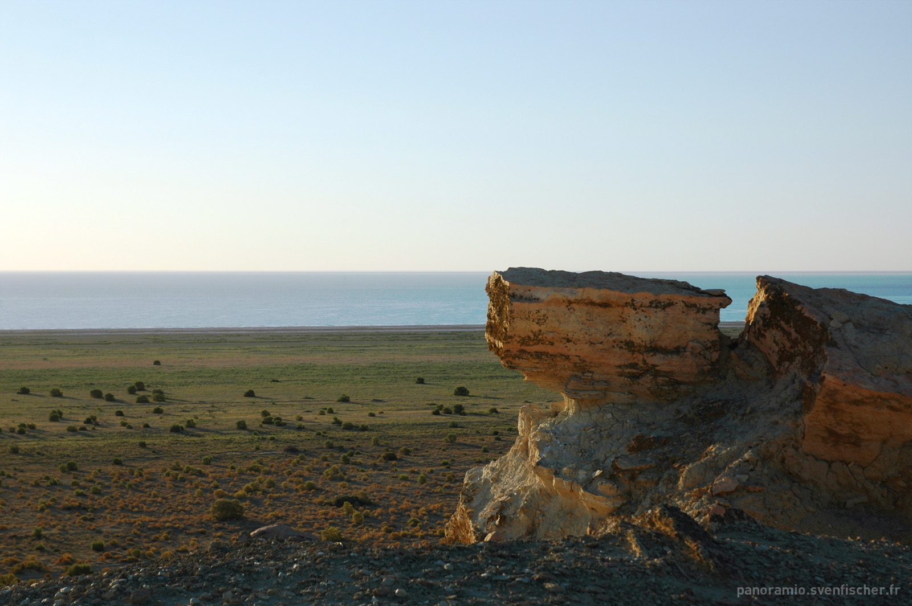

A $2 Billion Exploration Push in Ustyurt: bp, SOCAR and Uzbekneftegaz Prepare the First Well
A managing committee meeting in Tashkent on 7 September confirmed that 3D seismic fieldwork is complete. The agreement covers six blocks in Karakalpakstan; bp holds 40%, SOCAR 30% and Uzbekneftegaz 30%.

Azerbaijan's SOCAR, Britain's bp and state-owned Uzbekneftegaz are preparing for exploration drilling across six blocks in Uzbekistan's Ustyurt region.
According to The Times of Central Asia, the project's managing committee met in Tashkent on 7 September to review completed work and discuss the move to the next stage.
Seismic work is complete
3D seismic fieldwork was completed in July 2026, covering more than 3,000 km² — the minimum commitment under the agreement was 1,000 km².
The data is now being processed and geologically interpreted. Processing is expected to finish in the first quarter of 2027, after which the site of the first exploration well will be chosen.
Citing Uzbekistan's Energy Ministry, Trend reported that completing the 3D seismic fieldwork provides an important foundation for the next stage.
The six blocks
The production sharing agreement (PSA) covers six blocks in the Republic of Karakalpakstan:
- Boyterak
- Terengquduq
- Birqori
- Kharoy
- Qoraqalpoq
- Qulboy
The area is known as North Ustyurt. Reports describe it as barely investigated, with very few drilling activities carried out there.
Who holds what
bp joined the project in May 2026, buying 20% each from SOCAR and Uzbekneftegaz. The resulting stakes are:
- bp — 40%
- SOCAR — 30% (operator)
- Uzbekneftegaz — 30%
The documents were signed in Tashkent on the sidelines of the Oil and Gas of Uzbekistan Conference 2026 by Energy Minister Jurabek Mirzamahmudov, Uzbekneftegaz management board chairman Abdugani Sanginov, SOCAR president Rovshan Najaf and bp regional president Gio Cristofoli.
We are pleased to be entering our first project in Uzbekistan, alongside Uzbekneftegaz and our long-standing partner SOCAR.
— Gio Cristofoli, bp regional president for Azerbaijan, Georgia and Türkiye (bp statement, May 2026)
Cristofoli also said bp believes Uzbekistan has significant resource potential and that the transaction supports the company's strategy of expanding its exploration portfolio.
The project is expected to strengthen energy cooperation between Azerbaijan and Uzbekistan while leveraging the technical and operational experience of all three companies.
— Rovshan Najaf, SOCAR president (bp/SOCAR statement, May 2026)
By the numbers
- Total investment: about $2 billion
- Blocks: 6 (Republic of Karakalpakstan)
- 3D seismic coverage: more than 3,000 km² (minimum commitment 1,000 km²)
- Stakes: bp 40%, SOCAR 30% (operator), Uzbekneftegaz 30%
- Preliminary oil estimate: 100 million tonnes
- Preliminary gas estimate: 35 billion cubic metres
- Potential annual output: up to 5 million tonnes of oil
- PSA signed: July 2025
- bp entered: May 2026
- Approved work programme: through 2029
Resource estimates
Preliminary estimates put 100 million tonnes of oil and 35 billion cubic metres of natural gas across the six blocks, with potential annual production of up to 5 million tonnes of oil.
These are exploration-stage estimates and may change with drilling results. The first exploration well is targeted for 2027.
bp returns to Uzbekistan
bp held exploration agreements in Uzbekistan between 2018 and 2021. The Ustyurt project is the company's first upstream venture in Central Asia outside its traditional Caspian assets.
Geographically the acreage lies along the Uzbek–Kazakh border, close to Kazakhstan's North Caspian basin.